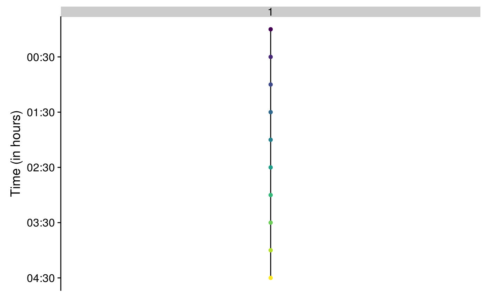
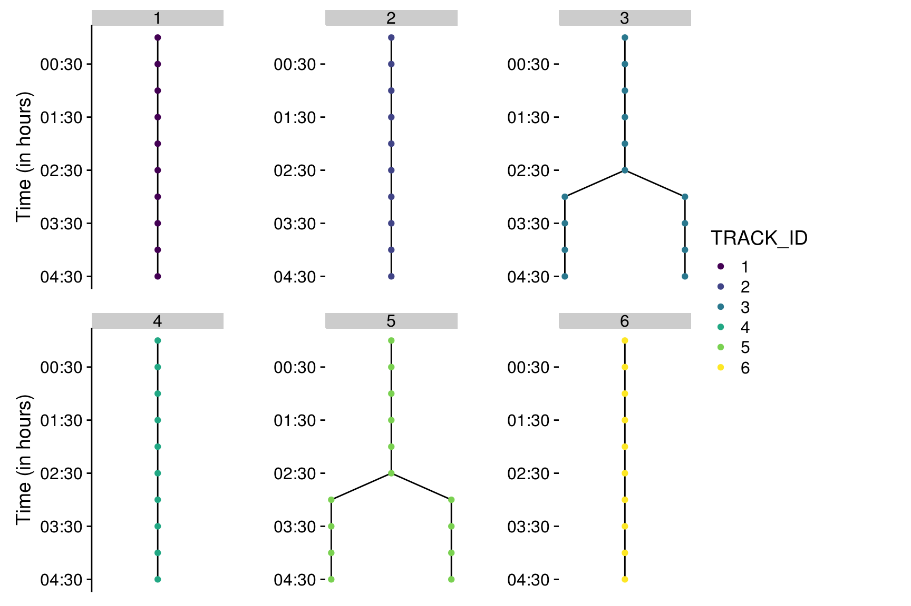

vignettes/Vignette_MaMuT2R.Rmd
Vignette_MaMuT2R.RmdThe mamut.xml file is loaded as a list in R using the xmlToList() function from the {XML} package.
The MaMuT .xml file stores two type of objects, under two types of tags: the spots and the tracks. In the case of the study of the development of an organ, spots usually refer to nuclei and tracks to cell lineages. Here, Spots.as.dataframe() and Tracks.as.dataframe() extract information from the .xml file and format them as dataframes (more precisely as tibbles).
Information regarding the spots (x, y, z location, ID…) are extracted using the Spots.as.dataframe and stored in a tibble.
Spots_df <- Spots.as.dataframe(fileXML)
Spots_df
#> # A tibble: 441 x 11
#> ID name VISIBILITY RADIUS QUALITY SOURCE_ID POSITION_T POSITION_X
#> <int> <chr> <chr> <dbl> <chr> <chr> <dbl> <dbl>
#> 1 2115 ID21… 1 14.6 -1.0 0 0 834.
#> 2 3077 ID30… 1 14.6 -1.0 0 0 788.
#> 3 1542 ID15… 1 14.6 -1.0 0 0 865.
#> 4 3398 ID33… 1 14.6 -1.0 0 0 945.
#> 5 2569 ID25… 1 14.6 -1.0 0 0 888.
#> 6 1930 ID19… 1 14.6 -1.0 0 0 836.
#> 7 2956 ID29… 1 14.6 -1.0 0 0 788.
#> 8 3597 ID35… 1 14.6 -1.0 0 0 1086.
#> 9 337 ID337 1 14.6 -1.0 0 0 1046.
#> 10 3025 ID30… 1 14.6 -1.0 0 0 817.
#> # ... with 431 more rows, and 3 more variables: POSITION_Y <dbl>,
#> # FRAME <chr>, POSITION_Z <dbl>Information regarding the tracks (ID of source and target spots, track ID…) are extracted using the Tracks.as.dataframe and stored in a tibble.
Tracks_df <- Tracks.as.dataframe(fileXML)
Tracks_df
#> # A tibble: 400 x 8
#> SPOT_SOURCE_ID SPOT_TARGET_ID LINK_COST VELOCITY DISPLACEMENT TRACK_NAME
#> <int> <int> <chr> <dbl> <dbl> <chr>
#> 1 135 142 103.6346… 5.81 5.81 Track_1
#> 2 179 182 -1.0 18.6 18.6 Track_1
#> 3 183 184 -1.0 14.6 14.6 Track_1
#> 4 182 183 -1.0 14.6 14.6 Track_1
#> 5 142 179 -1.0 7.20 7.20 Track_1
#> 6 122 129 29.60479… 4.11 4.11 Track_1
#> 7 96 116 42.20738… 2.55 2.55 Track_1
#> 8 116 122 52.23397… 5.70 5.70 Track_1
#> 9 129 135 30.78595… 3.60 3.60 Track_1
#> 10 215 222 56.26781… 14.7 14.7 Track_2
#> # ... with 390 more rows, and 2 more variables: TRACK_ID <chr>,
#> # TRACK_INDEX <chr>Tracks are composed of nodes (the spots) and edges (between the spots). Source and target spots are respectively the origin and the end of an edge between two timepoints. checkTrack() checks the orientation of edges and ensure to always have the source spot in an earlier timepoint than the target spot. This is necessary for plotting the lineage trees afterwards with {ggraph}.
Tracks_df <- checkTrack(Tracks_df, Spots_df)
Tracks_df
#> # A tibble: 400 x 10
#> SPOT_SOURCE_ID SPOT_TARGET_ID LINK_COST VELOCITY DISPLACEMENT TRACK_NAME
#> <int> <int> <chr> <dbl> <dbl> <chr>
#> 1 135 142 103.6346… 5.81 5.81 Track_1
#> 2 179 182 -1.0 18.6 18.6 Track_1
#> 3 183 184 -1.0 14.6 14.6 Track_1
#> 4 182 183 -1.0 14.6 14.6 Track_1
#> 5 142 179 -1.0 7.20 7.20 Track_1
#> 6 122 129 29.60479… 4.11 4.11 Track_1
#> 7 96 116 42.20738… 2.55 2.55 Track_1
#> 8 116 122 52.23397… 5.70 5.70 Track_1
#> 9 129 135 30.78595… 3.60 3.60 Track_1
#> 10 215 222 56.26781… 14.7 14.7 Track_2
#> # ... with 390 more rows, and 4 more variables: TRACK_ID <chr>,
#> # TRACK_INDEX <chr>, SPOT_SOURCE_FRAME <dbl>, SPOT_TARGET_FRAME <dbl>Spots dataframes can be enriched with information coming from the tracks using spots.and.tracks().
Spots_Tracks <- spots.and.tracks(Spots_df, Tracks_df)
Spots_Tracks
#> # A tibble: 441 x 12
#> ID name VISIBILITY RADIUS QUALITY SOURCE_ID POSITION_T POSITION_X
#> <int> <chr> <chr> <dbl> <chr> <chr> <dbl> <dbl>
#> 1 2115 ID21… 1 14.6 -1.0 0 0 834.
#> 2 3077 ID30… 1 14.6 -1.0 0 0 788.
#> 3 1542 ID15… 1 14.6 -1.0 0 0 865.
#> 4 3398 ID33… 1 14.6 -1.0 0 0 945.
#> 5 2569 ID25… 1 14.6 -1.0 0 0 888.
#> 6 1930 ID19… 1 14.6 -1.0 0 0 836.
#> 7 2956 ID29… 1 14.6 -1.0 0 0 788.
#> 8 3597 ID35… 1 14.6 -1.0 0 0 1086.
#> 9 337 ID337 1 14.6 -1.0 0 0 1046.
#> 10 3025 ID30… 1 14.6 -1.0 0 0 817.
#> # ... with 431 more rows, and 4 more variables: POSITION_Y <dbl>,
#> # FRAME <chr>, POSITION_Z <dbl>, TRACK_ID <chr>track2plot() allows to plot the lineage trees with a custom color code.
Tracks are identified by their ID.
To plot one track:
track2plot(track = "1", Tracks_df, Spots_Tracks,
colNode = FRAME, colYaxis = "black", colNode_discrete = TRUE)
To plot the first six tracks:
trackset <- all_tracks[1:6]
nbrow <- 2
#display y axis only for plots on the left
colYaxis_pattern <- rep(c("black",
rep("white", (ceiling(length(trackset)/nbrow)-1) ) ), nbrow)
colYaxis <- colYaxis_pattern[1:length(trackset)]
all_layouts <- map2(trackset, colYaxis,
~track2plot(.x, Tracks_df, Spots_Tracks, colNode = TRACK_ID, colYaxis = .y, colNode_discrete=TRUE, breaks = unique(trackset)))
prow <- plot_grid(plotlist = all_layouts, nrow = nbrow)
legend <- get_legend(all_layouts[[1]]+theme(legend.position="right"))
p <- plot_grid( prow, legend, rel_widths = c(1, .3))
p